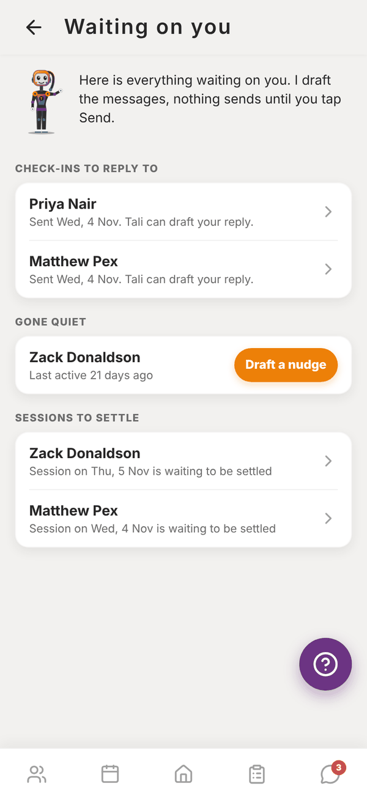
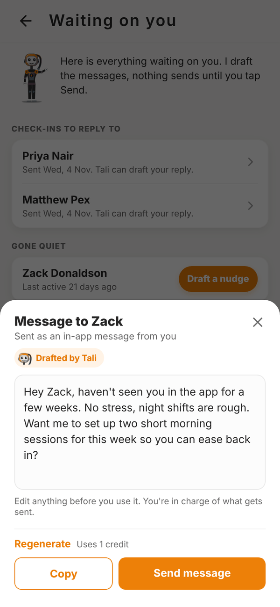
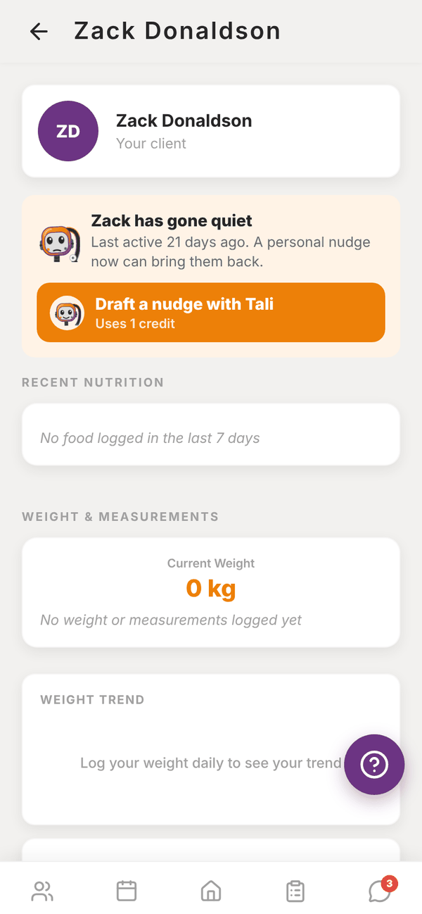

Totality for trainers
Waiting on you and nudges
One list of check-ins to answer, clients who've gone quiet and sessions to settle, with Tali drafting the nudges.
Waiting on you is one list of everything that needs you. Open it from See what's waiting on Tali's brief on Home. Paid Trial


What's in the list#
- Check-ins to reply to: every check-in you haven't answered, with when it was sent. Tap one to open it in Check-ins, ready for a reply.
- Gone quiet: clients who haven't been active in the app for 14 days or more, with "Last active N days ago" (or "Not active in the app yet"). Tap the name to open their profile, or tap Draft a nudge.
- Sessions to settle: sessions marked Pending settlement. Tap one to jump to that day in Schedule with the session open. See Credits and settling sessions.
When there's nothing left, Tali says so.
Nudges#
A nudge is a short, friendly message to bring a quiet client back. Tali writes it, you send it.
- Tap Draft a nudge on a client in Gone quiet (or Draft a nudge with Tali on their profile).
- Tali looks at their activity and writes a message in your voice. It uses 1 credit.
- Edit anything in the box. Regenerate writes a new one (1 more credit).
- Tap Send message. It arrives as an in-app message from you, with a notification. Or tap Copy (Share on a phone) to send it another way.
Once you've messaged a client, they drop off Gone quiet for 7 days so you're not nudging twice.

The weekly inactive email#
Separately from Tali, Totality emails you a weekly digest listing clients with no activity (sessions, food or check-ins) in the last 14 days. New clients get a 14 day grace period. To stop it, switch off Tips and reports in Settings, or use the Unsubscribe link in the email.
Questions#
I'm on Free. Can I still see who's gone quiet?
Yes. The At risk filter on the Clients tab shows clients with no app activity for 14 days, and Home flags inactive clients in Needs Attention. Waiting on you and Tali's nudges come with a Solo plan.
Does Tali send anything on her own?
No. Nothing is sent until you tap Send message.
Can I nudge a client without Tali?
Yes. Open Messages, tap the client and write to them yourself.